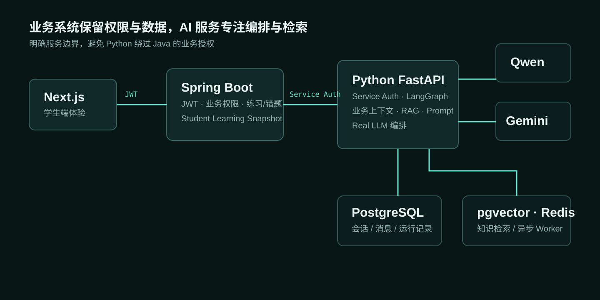

原始 Demo 状态
- 固定 / Mock 业务上下文
- Memory RAG 与 Mock Embedding
- Memory Persistence
- Background Task
- 固定学生身份风险
01 / PROJECT DEMO
演示使用本地脱敏测试数据；AI 响应、业务接口、RAG 与持久化链路均来自真实本地运行环境。
02 / DEMO → PRODUCTION
原始 Demo 状态
最终工程状态
项目没有继续堆 Agent 功能，而是优先替换影响真实上线的 Mock 与基础设施。
03 / SOLUTION ARCHITECTURE

业务权限不旁路Python 不直接读取 Java 业务库。
两类上下文分离学生数据走 Java API，课程知识走 RAG。
AI 服务独立演进能力升级不侵入核心业务事务。
04 / 真实请求流程
05 / RAG QUALITY
44 条人工确认 Golden Set 完成全量评测，当前指标无需继续调整 Retrieval。
覆盖范围：五年级数学 · 分数
06 / PRODUCTION ENGINEERING EVIDENCE
| 工程问题 | 设计方案 | 验证结果 |
|---|---|---|
| 用户身份 | JWT + Java 权限 | Cross-user 通过 |
| AI 业务上下文 | Student Snapshot | 运行时通过 |
| RAG | pgvector + Gemini | 质量 Gate 通过 |
| 数据持久化 | PostgreSQL | 重启验证通过 |
| 异步运行 | Redis Worker | 重试 / 恢复通过 |
| 模型调用 | 真实 Qwen | E2E 通过 |
| 本地运行 | Docker Compose | 运行时通过 |
07 / VERIFICATION GATES
08 / VERIFIED BOUNDARIES